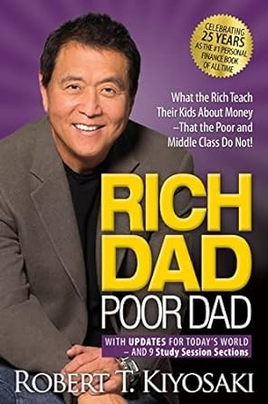
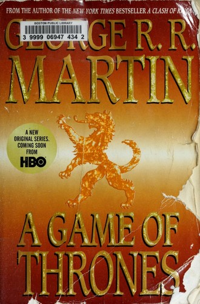
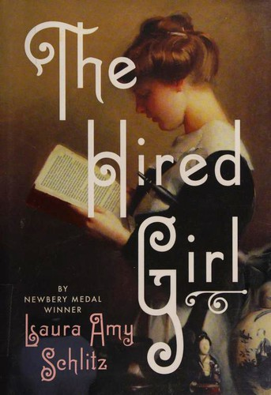
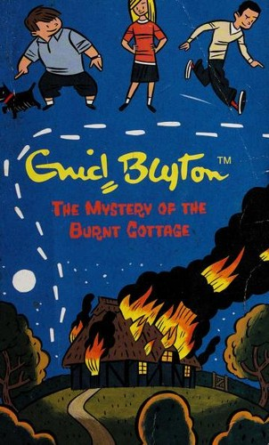

Book Store
|  |
Rich Dad Poor Dad Rich Dad Poor Dad" is a personal finance book written by Robert Kiyosaki. The book uses the author's experiences growing up with two fathers - his biological father (poor dad) and the father of his best friend (rich dad) - to provide lessons and insights on building wealth and achieving financial independence. More details |
|  |
Game of Thrones Here is the first volume in George R. R. Martin’s magnificent cycle of novels that includes A Clash of Kings and A Storm of Swords. As a whole, this series comprises a genuine masterpiece of modern fantasy, bringing together the best the genre has to offer. Magic, mystery, intrigue, romance, and adventure fill these pages and transport us to a world unlike More details |
|  |
The Hired Girl Rich Dad Poor Dad" is a personal finance book written by Robert Kiyosaki. The book uses the author's experiences growing up with two fathers - his biological father (poor dad) and the father of his best friend (rich dad) - to provide lessons and insights on building wealth and achieving financial independence. More details |
|  |
The Mystery of the Burnt Cottage Fatty, Larry, Daisy, Pep, Bets and Buster the dog turn detectives when a mysterious fire destroys a thatched cottage in Mr. Hick's garden in their village. Calling themselves the "Five Find-Outers and Dog" they set out to solve the mystery and discover the culprit. More details |